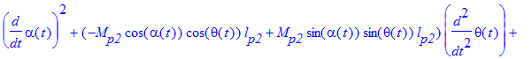
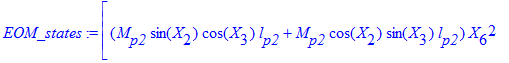
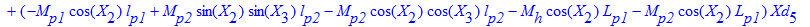
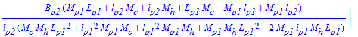

DBPEN-LIN.mws
Dynamic Equations for the
Linear Double Inverted Pendulum (DBIP) Experiment
©
2012 Quanser Consulting Inc.
URL:
http://www.quanser.com
NOTE: This worksheet presents the general dynamic equations modelling a Double Inverted Pendulum mounted on a linear cart.
Description
-
This worksheet presents the general dynamic equations modelling a double inverted pendulum mounted on a linear cart (i.e. IP02).
-
Specifically, this worksheet is used to derive the state-space matrices for the Quanser's
DouBle Inverted Pendulum (DBIP)
experiment.
-
The resulting double inverted pendulum system has 3-Degrees-Of-Freedom (DOF) for a planar motion.
-
The Lagrange's method is used to obtain the dynamic model of the system.
The
Quanser_Tools
Package
-
The
Quanser_Tools
module defines generic procedures and data in relation to determining the state-space representation of all the Quanser experiments. Specifically, this means deriving and solving the Lagrange's equations of the Quanser systems.
-
The
quanser
repository containing the
Quanser_Tools
package is implemented in the 2 following files:
quanser.ind
and
quanser.lib.
If these two files are not readily available, they can be generated by executing the Maple worksheet titled:
quanser_tools.mws
.
-
To install
the
Quanser_Tools
package, copy the two files
quanser.ind
and
quanser.lib
into a directory of your choice, like for example: "C:\Program Files\Quanser\Maple Repository".
-
To use
the
Quanser_Tools
package in a Maple worksheet, add the path to its disk location to the Maple global variable
libname
. For example, this can be achieved by the following Maple command:
libname :=
"C:/Program Files/Quanser/Maple Repository", libname:
Worksheet Initialization
| > |
restart: interface( imaginaryunit = j ):
|
| > |
libname := "C:/Program Files/Quanser/Maple Repository", ".", libname:
|
environment variable representing the order of series calculations
IP02 Parameters
| > |
IP02_PARAM := { M[c] = 0.7031, J[m] = 3.9e-7, K[t] = 0.0077, Eff_m = 1, r[mp] = 0.0063, B[eq] = 4.3, K[g] = 3.71};
|
Notations
Generalized Coordinates:
's
The generalized coordinates are also called Lagrangian coordinates.
= driving cart (i.e. HFLC) linear position
Relative Pendulum angles:
= Lower inverted pendulum position angle about the vertical: the zero angle [mod 2*pi] is defined when the IP is in the perfect upright position.
= Upper inverted pendulum position angle about the vertical of the lower pendulum: the zero angle [mod 2*pi] is defined when the IP is in the perfect upright position w.r.t. to the lower pendulum.
Np = number of links (i.e. pendulums)
| > |
q := [ x[c](t), alpha(t), theta(t) ];
|
Nq = number of Lagrangian coordinates
Nq is also the number of position states.
qd = first-order time derivative of the generalized coordinates, e.g. position and angular velocities
| > |
qd := map( diff, q, t );
|
Transformation Matrices
Translation from the base to cart position.
| > |
T[0,c] := HTM('trans',q[1],0,0);
|
Rotation about
joint.
| > |
R[alpha] := HTM('rot','Z',q[2]);
|
Translation to pendulum 1 cog.
| > |
T[p1] := HTM('trans',0,l[p1],0);
|
Translation to hinge.
| > |
T[ph] := HTM('trans',0,L[p1],0);
|
Cart to pendulum 1 cog.
| > |
T[c,1] := Multiply(R[alpha],T[p1]);
|
Cart to hinge
| > |
T[c,h] := Multiply(R[alpha],T[ph]);
|
Rotation about
.
| > |
R[theta] := HTM('rot','Z',q[3]);
|
Translation to cog 2.
| > |
T[p2] := HTM('trans',0,l[p2],0);
|
Hinge to cog 2
| > |
T[h,2] := Multiply( R[theta], T[p2] );
|
Cart to cog 2.
| > |
T[c,2] := Multiply( T[c,h], T[h,2] );
|
![T[c,2] := Matrix(%id = 137151480)](images/DBPEN-LIN15.gif)
![T[c,2] := Matrix(%id = 137151480)](images/DBPEN-LIN16.gif)
![T[c,2] := Matrix(%id = 137151480)](images/DBPEN-LIN19.gif)
Base coordinate system to cog 1.
| > |
T[0,1] := Multiply( T[0,c], T[c,1] );
|
Base coordinate system to hinge.
| > |
T[0,h] := Multiply( T[0,c], T[c,h] );
|
Base coordinate system to the cog 2.
| > |
T[0,2] := Multiply( T[0,c], T[c,2] );
|
![T[0,2] := Matrix(%id = 137152776)](images/DBPEN-LIN27.gif)
![T[0,2] := Matrix(%id = 137152776)](images/DBPEN-LIN28.gif)
![T[0,2] := Matrix(%id = 137152776)](images/DBPEN-LIN29.gif)
![T[0,2] := Matrix(%id = 137152776)](images/DBPEN-LIN30.gif)
Cartesian Coordinates of the Pendulum's Centre Of Gravity
conventions:
1)
corresponds to both pendulums perfectly vertical, pointing downswards.
2) positive rotation is
CCW
when facing the cart.
= x-coordinate of each pendulum's Centre Of Gravity (COG) absolute Cartesian position
= y-coordinate of each pendulum's Centre Of Gravity (COG) absolute Cartesian position
| > |
x[p,1] := T[0,1][1,4];
y[p,1] := T[0,1][2,4];
x[p,2] := T[0,2][1,4];
y[p,2] := T[0,2][2,4];
|
![x[p,1] := -sin(alpha(t))*l[p1]+x[c](t)](images/DBPEN-LIN33.gif)
![y[p,2] := -sin(alpha(t))*sin(theta(t))*l[p2]+cos(alpha(t))*cos(theta(t))*l[p2]+cos(alpha(t))*L[p1]](images/DBPEN-LIN36.gif)
= x-coordinate of the hinge COG absolute Cartesian position
= y-coordinate of the hinge COG absolute Cartesian position
| > |
x[h] := T[0,h][1,4];
y[h] := T[0,h][2,4];
|
= x-coordinate of each pendulum's Centre Of Gravity (COG) absolute Cartesian velocity
= y-coordinate of each pendulum's Centre Of Gravity (COG) absolute Cartesian velocity
| > |
xd[p,1] := diff(x[p,1],t);
yd[p,1] := diff(y[p,1],t);
xd[p,2] := diff(x[p,2],t);
yd[p,2] := diff(y[p,2],t);
|
= x-coordinate of the hinge COG absolute Cartesian position
= y-coordinate of the hinge COG absolute Cartesian position
| > |
xd[h] := diff(x[h],t);
yd[h] := diff(y[h],t);
|
State-Space Variables
-
The chosen states should at least include the generalized coordinates and their first-time derivatives.
-
X is the state vector.
-
In the state vector X: Lagrangian coordinates are first, followed by their first-time derivatives, and finally any other states, as required.
Substitution sets for the states (to obtain time-independent state equations).
| > |
subs_Xq := { seq( q[i] = X[i], i=1..Nq ) };
subs_Xqd := { seq( qd[i] = X[i+Nq], i=1..Nq ) };
|
Substitution set for the input(s).
set the input to be the motor voltage:
| > |
subs_U := { V[m] = U[1] }:
|
set the input to be the cart's driving force:
![F[c]](images/DBPEN-LIN55.gif) (if not expressed as a function of the motor voltage):
(if not expressed as a function of the motor voltage):
| > |
#subs_U := { F[c] = U[1] }:
|
Nu = number of inputs; U
= input (row) vector (e.g. U = [ V[m] ] )
substitution set for the position states' second time derivatives
| > |
subs_Xqdd := { seq( diff( q[i], t$2 ) = Xd[i+Nq], i=1..Nq ) };
|
second time derivatives of the position states (written as time-independent variables).
The set of unknowns is obtained from this list to solve the Lagrange's equations of motion.
| > |
Xqdd := [ seq( Xd[i+Nq], i=1..Nq ) ];
|
substitution set to linearize the state-space matrices (i.e. A and B)
about the quiescent null state vector (small-displacement theory)
| > |
subs_XUzero := { seq( X[i] = 0, i=1..2*Nq ), seq( U[i] = 0, i=1..Nu ) }:
|
Nx = dim( X ) = total number of states (should be greater than or equal to: 2 * Nq)
Ny = chosen number of outputs
| > |
Nx := 2 * Nq + 0:
Ny := Nq:
|
Total Potential and Kinetic Energies of the System
The total potential and kinetic energies are needed to calculate the Lagragian of the system.
Total Potential Energy:
The total potential energy can be expressed in terms of the generalized coordinates alone.
V[e] = Total Elastic Potential Energy of the system
Pendulum 1 potential energy
| > |
Vg[1] := potential_energy( 'gravity', M[p1], g, y[p,1] );
|
Pendulum 2 potential energy
| > |
Vg[2] := potential_energy( 'gravity', M[p2], g, y[p,2] );
|
Hinge potential energy
| > |
Vg[h] := potential_energy( 'gravity', M[h], g, y[h] );
|
Vg = Total Gravitational Potential Energy of the system
| > |
V[g] := Vg[1] + Vg[2] + Vg[h];
|
V[T] = Total Potential Energy of the system
| > |
V[T] := simplify(V[g] + V[e]);
|
Total Kinetic Energy:
The total kinetic energy can be expressed in terms of the generalized coordinates and their first-time derivatives.
= translational kinetic energy of the motorized cart (e.g. HFLC)
= cart total mass
| > |
Tt[c] := kinetic_energy( 'translation', M[c], qd[1] );
|
The cart's directions of translation and rotation are orthogonal.
= kinetic energy due to rotation tied to the motorized cart
= motor armature inertia;
= gear ratio;
= motor pinion radius
| > |
Tr[c] := kinetic_energy( 'rotation', J[m], omega[m](t));
|
Angular rate of motor w.r.t. linear velocity (no gearbox).
| > |
REL_W_X := omega[m](t) = K[g] * qd[1] / r[mp]:
REL_W_X;
|
Express rotational kinetic energy in terms of linear velocity.
| > |
K_ROT_CART := subs(REL_W_X,Tr[c]):
K_ROT_CART;
|
Evaluate coefficient of above term.
| > |
K_ROT_CART_COEFF := coeff(K_ROT_CART,diff(x[c](t),t),2):
K_ROT_CART_COEFF = evalf(subs(IP02_PARAM,K_ROT_CART_COEFF),3)*Unit(kg);
|
Given that 0.0680 kg << Mc (0.14 kg), the rotational kinetic energy from the cart can be neglected. Therefore
![Tr[c] := 0](images/DBPEN-LIN78.gif)
Pendulum 1 motion is composed of one rotation and one translation, both directions are orthogonal.
= pendulum 1 absolute angular velocity;
Tr[p,1] = pendulum 1 rotational kinetic kinergy;
| > |
#Tr[p,1] := kinetic_energy( 'rotation', J[p1], qd[2] );
Tr[p,1] := 0;
|
v[p,1] = pendulum 1 cartesian velocity (magnitude);
Tt[p,1] = pendulum 1 translational kinetic kinergy
| > |
v[p,1] := n_norm( [ xd[p,1], yd[p,1] ], 2 ):
Tt[p,1] := kinetic_energy( 'translation', M[p1], v[p,1] );
|
Pendulum 2 motion is composed of one rotation and one translation, both directions are orthogonal.
= pendulum 2 absolute angular velocity
Tr[p,2] = pendulum 2 rotational kinetic kinergy
| > |
#Tr[p,2] := kinetic_energy( 'rotation', J[p2], qd[3] );
Tr[p,2] := 0;
|
v[p,2] = pendulum 2 cartesian velocity (magnitude)
Tt[p,2] = pendulum 2 translational kinetic kinergy
| > |
v[p,2] := n_norm( [ xd[p,2], yd[p,2] ], 2 ):
Tt[p,2] := kinetic_energy( 'translation', M[p2], v[p,2] );
|
The hinge motion is composed one translation
v[h] = hinge cartesian velocity (magnitude);
Tt[h] = hinge translational kinetic kinergy
| > |
v[h] := n_norm( [ xd[h], yd[h] ], 2 ):
Tt[h] := kinetic_energy( 'translation', M[h], v[h] );
|
![Tt[h] := 1/2*M[h]*((-cos(alpha(t))*diff(alpha(t),t)*L[p1]+diff(x[c](t),t))^2+sin(alpha(t))^2*diff(alpha(t),t)^2*L[p1]^2)](images/DBPEN-LIN86.gif)
Total kinetic energy.
| > |
T[T] := collect( simplify( Tr[c]+Tt[c]+Tr[p,1]+Tt[p,1]+Tr[p,2]+Tt[p,2]+Tt[h] ), diff );
|
![T[T] := 1/2*M[p2]*diff(theta(t),t)^2*l[p2]^2+((M[p2]*l[p2]^2+M[p2]*cos(theta(t))*l[p2]*L[p1])*diff(alpha(t),t)+(-M[p2]*cos(alpha(t))*cos(theta(t))*l[p2]+M[p2]*sin(alpha(t))*sin(theta(t))*l[p2])*diff(x[...](images/DBPEN-LIN88.gif)
![T[T] := 1/2*M[p2]*diff(theta(t),t)^2*l[p2]^2+((M[p2]*l[p2]^2+M[p2]*cos(theta(t))*l[p2]*L[p1])*diff(alpha(t),t)+(-M[p2]*cos(alpha(t))*cos(theta(t))*l[p2]+M[p2]*sin(alpha(t))*sin(theta(t))*l[p2])*diff(x[...](images/DBPEN-LIN89.gif)
![T[T] := 1/2*M[p2]*diff(theta(t),t)^2*l[p2]^2+((M[p2]*l[p2]^2+M[p2]*cos(theta(t))*l[p2]*L[p1])*diff(alpha(t),t)+(-M[p2]*cos(alpha(t))*cos(theta(t))*l[p2]+M[p2]*sin(alpha(t))*sin(theta(t))*l[p2])*diff(x[...](images/DBPEN-LIN90.gif)
Generalized Forces:
's
The non-conservative forces corresponding to the generalized coordinates are:
![F[c]](images/DBPEN-LIN93.gif) and the viscous damping forces, where
and the viscous damping forces, where
![F[c]](images/DBPEN-LIN94.gif) = linear force generated by the motorized cart (e.g. HFLC)
= linear force generated by the motorized cart (e.g. HFLC)
Bp1 = bottom pendulum viscous friction torque coefficient (a.k.a. viscous damping)
Bp2 = top pendulum viscous friction torque coefficient (a.k.a. viscous damping)
Beq = cart viscous damping force coefficient
= 0 and
= 0 and
= 0 if all viscous dampings are neglected
| > |
#B[eq] := 0:
#B[p1] := 0:
#B[p2] := 0:
|
Q[i] = generalized force applied on generalized coordinate q[i]
the Coulomb friction is neglected, as well as the force due to the pendulum and acting on the linear cart
| > |
Q[1] := F[c] - B[eq] * qd[1];
|
| > |
Q[2] := - B[p1] * qd[2];
|
| > |
Q[3] := - B[p2] * qd[3];
|
![F[c]](images/DBPEN-LIN101.gif) = Linear force produced by the motor at the motor pinion: cart driving force
= Linear force produced by the motor at the motor pinion: cart driving force
is calculated in the Maple worksheet titled:
IP01_2_Equations.mws
.
rm: comment the following line out if U = F[c], uncomment it if U = V[m]
| > |
F[c] := eta[g] * K[g] * eta[m] * K[t] * ( V[m] * r[mp] - K[g] * K[m] * qd[1] ) / R[m] / r[mp]^2;;
|
| > |
Q := [ seq( Q[i], i=1..Nq ) ];
|
Euler-Lagrange's Equations
For a
N
-DOF system, the Lagrange's equations can be written:
for
through
where:
's are special combinations of external forces and called the
generalized forces,
, ...,
, are
N
independent coordinates chosen to describe the system and called the
generalized coordinates
,
and
is the
Lagrangian
of the system.
is defined by:
where
is the total kinetic energy of the system and
the total potential energy of the system.
| > |
EOM_orig := lagrange_equations( T[T], V[T], q, Q ):
|
this is to display the EOM's
| > |
EOM_orig := collect( EOM_orig, { seq( diff( q[i], t$2 ), i=1..Nq ), seq( diff( q[i], t ), i=1..Nq ), seq( q[i], i=1..Nq ) } );
|

![EOM_orig := [(M[p2]*sin(alpha(t))*cos(theta(t))*l[p2]+M[p2]*cos(alpha(t))*sin(theta(t))*l[p2])*diff(theta(t),t)^2+(2*M[p2]*sin(alpha(t))*cos(theta(t))*l[p2]+2*M[p2]*cos(alpha(t))*sin(theta(t))*l[p2])*d...](images/DBPEN-LIN113.gif)
![EOM_orig := [(M[p2]*sin(alpha(t))*cos(theta(t))*l[p2]+M[p2]*cos(alpha(t))*sin(theta(t))*l[p2])*diff(theta(t),t)^2+(2*M[p2]*sin(alpha(t))*cos(theta(t))*l[p2]+2*M[p2]*cos(alpha(t))*sin(theta(t))*l[p2])*d...](images/DBPEN-LIN117.gif)
![EOM_orig := [(M[p2]*sin(alpha(t))*cos(theta(t))*l[p2]+M[p2]*cos(alpha(t))*sin(theta(t))*l[p2])*diff(theta(t),t)^2+(2*M[p2]*sin(alpha(t))*cos(theta(t))*l[p2]+2*M[p2]*cos(alpha(t))*sin(theta(t))*l[p2])*d...](images/DBPEN-LIN119.gif)
![EOM_orig := [(M[p2]*sin(alpha(t))*cos(theta(t))*l[p2]+M[p2]*cos(alpha(t))*sin(theta(t))*l[p2])*diff(theta(t),t)^2+(2*M[p2]*sin(alpha(t))*cos(theta(t))*l[p2]+2*M[p2]*cos(alpha(t))*sin(theta(t))*l[p2])*d...](images/DBPEN-LIN121.gif)
Express the Euler-Lagrange equations of motion as functions of the states:
1) substitute (i.e. name) the acceleration states first!
2) then substitute the velocity states!
3) and only after, the position states, and the inputs!
| > |
EOM_states := subs( subs_Xqd, subs( subs_Xqdd, EOM_orig ) ):
|
| > |
EOM_states := subs( subs_Xq, subs_U, EOM_states );
|


![EOM_states := [(M[p2]*sin(X[2])*cos(X[3])*l[p2]+M[p2]*cos(X[2])*sin(X[3])*l[p2])*X[6]^2+(2*M[p2]*sin(X[2])*cos(X[3])*l[p2]+2*M[p2]*cos(X[2])*sin(X[3])*l[p2])*X[5]*X[6]+(M[p1]*sin(X[2])*l[p1]+M[p2]*cos(...](images/DBPEN-LIN130.gif)
Linearization in the EOM's
of the Trigonometric Functions
Linearization of the equations of motion around the quiescent point of operation (in order to solve them).
Here, linearization around the zero angles, i.e. for small-amplitude oscillations.
Linearization around: alpha0 = 0, alpha_dot0 = 0, alpha1 = 0, and alpha_dot1 = 0
Generalized series expansions of the trigonometric functions is used (for small angles).
| > |
for i from 1 to Nq do
for k from 1 to Np do
EOM_ser[i] := subsop( 1 = convert( series( op( 1, EOM_ser[i] ), X[ k+1 ] ), polynom ), EOM_ser[i] );
end do:
EOM_ser[i] := simplify( EOM_ser[i] );
end do:
|
Additional Insight: Inertia (or mass) Matrix: Fi
The nonlinear system of equations resulting from the Lagrangian mechanics can be written in the following matrix form:
F( q ) . qdd + G( q, qd ) . qd + H( q ) . q = L( q, qd, u )
F, G, and H are called, respectively, the mass, damping, and stiffness matrices.
They are symmetric in form.
The inertia (a.k.a. mass) matrix, F, gives indications regarding the coupling existing in the system.
| > |
Fi := Matrix( Nq, Nq ):
|
| > |
for i from 1 to Nq do
for k from 1 to Nq do
Fi[ i, k ] := simplify( diff( op( 1, EOM_states[i] ), Xd[k+Nq] ) );
Fi[ i, k ] := collect( combine( Fi[ i, k ], trig ), cos );
end do;
end do:
|
Linearization of the inertia matrix for small-displacements
| > |
Fi_lin := Matrix( Nq, Nq ):
|
| > |
for i from 1 to Nq do
for k from 1 to Nq do
Fi_lin[ i, k ] := Fi[ i, k ];
Fi_lin[ i, k ] := convert( series( Fi_lin[ i, k ], X[ 2 ] ), polynom );
Fi_lin[ i, k ] := subs( subs_XUzero, Fi_lin[ i, k ] );
end do;
end do:
|
Solving the Euler-Lagrange's Equations
To solve the Euler-Lagrange's equations, they need to be linear.
Reverse State Substitution for Pretty Display of the Solved EOM's
only for pretty print
| > |
subs_Xq_rev := { seq( X[i] = q[i], i=1..Nq ) }:
subs_Xqd_rev := { seq( X[i+Nq] = qd[i], i=1..Nq ) }:
|
| > |
subs_U_rev := { U[1] = V[m] }:
#subs_U_rev := { U[1] = F[c] }:
|
| > |
eom_collect_list := { seq( diff( q[i], t ), i=1..Nq ), seq( q[i], i=1..Nq ) };
|
| > |
if not assigned( J[p1] ) then
eom_collect_list := eom_collect_list union { J[p1] };
end if;
|
| > |
if not assigned( J[p2] ) then
eom_collect_list := eom_collect_list union { J[p2] };
end if;
|
Solution to the Non-Linear Equations of Motion
Solve the non-linear form of the equations of motion for the states' second time derivatives
| > |
Xqdd_solset_nl := solve( convert( EOM_states, set ), convert( Xqdd, set ) ):
|
| > |
assign( Xqdd_solset_nl );
|
| > |
for i from 1 to Nq do
Xd_nl[i+Nq] := simplify( Xd[i+Nq] ):
unassign( 'Xd[i+Nq]' ):
end do:
|
pretty display w.r.t. the named system states
| > |
for i from 1 to Nq do
Xd_nl[i+Nq] := simplify( subs( subs_U_rev, subs_Xq_rev, subs_Xqd_rev, Xd_nl[i+Nq] ) ):
end do:
|
| > |
for i from 1 to Nq do
diff( qd[i], t ) = collect( Xd_nl[i+Nq], eom_collect_list );
end do:
|
Solution to the Linearized EOM's
Solve the linear form of the equations of motion for the states' second time derivatives
| > |
Xqdd_solset_ser := solve( convert( EOM_ser, set ), convert( Xqdd, set ) ):
|
| > |
assign( Xqdd_solset_ser );
|
Moreover, for small angles
| > |
subs_avsq_list := { X[Nq+2]^2 = 0, X[Nq+3]^2 = 0 }:
|
| > |
for i from 1 to Nq do
Xd[i+Nq] := subs( subs_avsq_list, Xd[i+Nq] );
end:
|
pretty display w.r.t. the named system states
| > |
for i from 1 to Nq do
diff( qd[i], t ) = collect( subs( subs_U_rev, subs_Xq_rev, subs_Xqd_rev, Xd[i+Nq] ), eom_collect_list );
end do;
|
,`$`(t,2)) = (-(-2*theta(t)^2*alpha(t)*R[m]*r[mp]^2*M[p2]^2*L[p1]^2*l[p2]^2+(2*M[p2]*l[p2]^2*R[m]*r[mp]^2*M[p1]*l[p1]^2-2*M[p1]*l[p1]*R[m]*r[mp]^2*M[p2]*l[p2]^2*L[p1])*theta(t)+(2*M[p2]*l[p...](images/DBPEN-LIN158.gif)
,`$`(t,2)) = (-(-2*theta(t)^2*alpha(t)*R[m]*r[mp]^2*M[p2]^2*L[p1]^2*l[p2]^2+(2*M[p2]*l[p2]^2*R[m]*r[mp]^2*M[p1]*l[p1]^2-2*M[p1]*l[p1]*R[m]*r[mp]^2*M[p2]*l[p2]^2*L[p1])*theta(t)+(2*M[p2]*l[p...](images/DBPEN-LIN163.gif)
,`$`(t,2)) = (-(-2*theta(t)^2*alpha(t)*R[m]*r[mp]^2*M[p2]^2*L[p1]^2*l[p2]^2+(2*M[p2]*l[p2]^2*R[m]*r[mp]^2*M[p1]*l[p1]^2-2*M[p1]*l[p1]*R[m]*r[mp]^2*M[p2]*l[p2]^2*L[p1])*theta(t)+(2*M[p2]*l[p...](images/DBPEN-LIN165.gif)
,`$`(t,2)) = (-(-2*theta(t)^2*alpha(t)*R[m]*r[mp]^2*M[p2]^2*L[p1]^2*l[p2]^2+(2*M[p2]*l[p2]^2*R[m]*r[mp]^2*M[p1]*l[p1]^2-2*M[p1]*l[p1]*R[m]*r[mp]^2*M[p2]*l[p2]^2*L[p1])*theta(t)+(2*M[p2]*l[p...](images/DBPEN-LIN169.gif)
,`$`(t,2)) = (-(-2*theta(t)^2*alpha(t)*R[m]*r[mp]^2*M[p2]^2*L[p1]^2*l[p2]^2+(2*M[p2]*l[p2]^2*R[m]*r[mp]^2*M[p1]*l[p1]^2-2*M[p1]*l[p1]*R[m]*r[mp]^2*M[p2]*l[p2]^2*L[p1])*theta(t)+(2*M[p2]*l[p...](images/DBPEN-LIN172.gif)
,`$`(t,2)) = (-(-2*theta(t)^2*alpha(t)*R[m]*r[mp]^2*M[p2]^2*L[p1]^2*l[p2]^2+(2*M[p2]*l[p2]^2*R[m]*r[mp]^2*M[p1]*l[p1]^2-2*M[p1]*l[p1]*R[m]*r[mp]^2*M[p2]*l[p2]^2*L[p1])*theta(t)+(2*M[p2]*l[p...](images/DBPEN-LIN176.gif)
![diff(alpha(t),`$`(t,2)) = (-(2*theta(t)^3*M[p2]^2*l[p2]^2*L[p1]*R[m]*r[mp]^2*alpha(t)^2-2*theta(t)^2*alpha(t)*M[p2]^2*L[p1]*l[p2]^2*R[m]*r[mp]^2+(2*l[p1]*M[p2]*l[p2]^2*R[m]*r[mp]^2*M[p1]-2*M[p1]*R[m]*r...](images/DBPEN-LIN178.gif)
![diff(alpha(t),`$`(t,2)) = (-(2*theta(t)^3*M[p2]^2*l[p2]^2*L[p1]*R[m]*r[mp]^2*alpha(t)^2-2*theta(t)^2*alpha(t)*M[p2]^2*L[p1]*l[p2]^2*R[m]*r[mp]^2+(2*l[p1]*M[p2]*l[p2]^2*R[m]*r[mp]^2*M[p1]-2*M[p1]*R[m]*r...](images/DBPEN-LIN181.gif)
![diff(alpha(t),`$`(t,2)) = (-(2*theta(t)^3*M[p2]^2*l[p2]^2*L[p1]*R[m]*r[mp]^2*alpha(t)^2-2*theta(t)^2*alpha(t)*M[p2]^2*L[p1]*l[p2]^2*R[m]*r[mp]^2+(2*l[p1]*M[p2]*l[p2]^2*R[m]*r[mp]^2*M[p1]-2*M[p1]*R[m]*r...](images/DBPEN-LIN185.gif)
![diff(alpha(t),`$`(t,2)) = (-(2*theta(t)^3*M[p2]^2*l[p2]^2*L[p1]*R[m]*r[mp]^2*alpha(t)^2-2*theta(t)^2*alpha(t)*M[p2]^2*L[p1]*l[p2]^2*R[m]*r[mp]^2+(2*l[p1]*M[p2]*l[p2]^2*R[m]*r[mp]^2*M[p1]-2*M[p1]*R[m]*r...](images/DBPEN-LIN189.gif)
![diff(alpha(t),`$`(t,2)) = (-(2*theta(t)^3*M[p2]^2*l[p2]^2*L[p1]*R[m]*r[mp]^2*alpha(t)^2-2*theta(t)^2*alpha(t)*M[p2]^2*L[p1]*l[p2]^2*R[m]*r[mp]^2+(2*l[p1]*M[p2]*l[p2]^2*R[m]*r[mp]^2*M[p1]-2*M[p1]*R[m]*r...](images/DBPEN-LIN192.gif)
![diff(alpha(t),`$`(t,2)) = (-(2*theta(t)^3*M[p2]^2*l[p2]^2*L[p1]*R[m]*r[mp]^2*alpha(t)^2-2*theta(t)^2*alpha(t)*M[p2]^2*L[p1]*l[p2]^2*R[m]*r[mp]^2+(2*l[p1]*M[p2]*l[p2]^2*R[m]*r[mp]^2*M[p1]-2*M[p1]*R[m]*r...](images/DBPEN-LIN202.gif)
![diff(alpha(t),`$`(t,2)) = (-(2*theta(t)^3*M[p2]^2*l[p2]^2*L[p1]*R[m]*r[mp]^2*alpha(t)^2-2*theta(t)^2*alpha(t)*M[p2]^2*L[p1]*l[p2]^2*R[m]*r[mp]^2+(2*l[p1]*M[p2]*l[p2]^2*R[m]*r[mp]^2*M[p1]-2*M[p1]*R[m]*r...](images/DBPEN-LIN203.gif)
![diff(theta(t),`$`(t,2)) = (1/l[p2]^2*(2*theta(t)^3*M[p2]^3*l[p2]^3*L[p1]*R[m]*r[mp]^2*alpha(t)^2+(-2*M[p2]^3*L[p1]*l[p2]^3*R[m]*r[mp]^2-2*M[p1]*l[p1]*R[m]*r[mp]^2*M[p2]^2*l[p2]^2*L[p1]+2*M[p2]^2*l[p2]^...](images/DBPEN-LIN209.gif)
![diff(theta(t),`$`(t,2)) = (1/l[p2]^2*(2*theta(t)^3*M[p2]^3*l[p2]^3*L[p1]*R[m]*r[mp]^2*alpha(t)^2+(-2*M[p2]^3*L[p1]*l[p2]^3*R[m]*r[mp]^2-2*M[p1]*l[p1]*R[m]*r[mp]^2*M[p2]^2*l[p2]^2*L[p1]+2*M[p2]^2*l[p2]^...](images/DBPEN-LIN211.gif)
![diff(theta(t),`$`(t,2)) = (1/l[p2]^2*(2*theta(t)^3*M[p2]^3*l[p2]^3*L[p1]*R[m]*r[mp]^2*alpha(t)^2+(-2*M[p2]^3*L[p1]*l[p2]^3*R[m]*r[mp]^2-2*M[p1]*l[p1]*R[m]*r[mp]^2*M[p2]^2*l[p2]^2*L[p1]+2*M[p2]^2*l[p2]^...](images/DBPEN-LIN215.gif)
![diff(theta(t),`$`(t,2)) = (1/l[p2]^2*(2*theta(t)^3*M[p2]^3*l[p2]^3*L[p1]*R[m]*r[mp]^2*alpha(t)^2+(-2*M[p2]^3*L[p1]*l[p2]^3*R[m]*r[mp]^2-2*M[p1]*l[p1]*R[m]*r[mp]^2*M[p2]^2*l[p2]^2*L[p1]+2*M[p2]^2*l[p2]^...](images/DBPEN-LIN219.gif)
![diff(theta(t),`$`(t,2)) = (1/l[p2]^2*(2*theta(t)^3*M[p2]^3*l[p2]^3*L[p1]*R[m]*r[mp]^2*alpha(t)^2+(-2*M[p2]^3*L[p1]*l[p2]^3*R[m]*r[mp]^2-2*M[p1]*l[p1]*R[m]*r[mp]^2*M[p2]^2*l[p2]^2*L[p1]+2*M[p2]^2*l[p2]^...](images/DBPEN-LIN224.gif)
![diff(theta(t),`$`(t,2)) = (1/l[p2]^2*(2*theta(t)^3*M[p2]^3*l[p2]^3*L[p1]*R[m]*r[mp]^2*alpha(t)^2+(-2*M[p2]^3*L[p1]*l[p2]^3*R[m]*r[mp]^2-2*M[p1]*l[p1]*R[m]*r[mp]^2*M[p2]^2*l[p2]^2*L[p1]+2*M[p2]^2*l[p2]^...](images/DBPEN-LIN229.gif)
![diff(theta(t),`$`(t,2)) = (1/l[p2]^2*(2*theta(t)^3*M[p2]^3*l[p2]^3*L[p1]*R[m]*r[mp]^2*alpha(t)^2+(-2*M[p2]^3*L[p1]*l[p2]^3*R[m]*r[mp]^2-2*M[p1]*l[p1]*R[m]*r[mp]^2*M[p2]^2*l[p2]^2*L[p1]+2*M[p2]^2*l[p2]^...](images/DBPEN-LIN232.gif)
![diff(theta(t),`$`(t,2)) = (1/l[p2]^2*(2*theta(t)^3*M[p2]^3*l[p2]^3*L[p1]*R[m]*r[mp]^2*alpha(t)^2+(-2*M[p2]^3*L[p1]*l[p2]^3*R[m]*r[mp]^2-2*M[p1]*l[p1]*R[m]*r[mp]^2*M[p2]^2*l[p2]^2*L[p1]+2*M[p2]^2*l[p2]^...](images/DBPEN-LIN244.gif)
![diff(theta(t),`$`(t,2)) = (1/l[p2]^2*(2*theta(t)^3*M[p2]^3*l[p2]^3*L[p1]*R[m]*r[mp]^2*alpha(t)^2+(-2*M[p2]^3*L[p1]*l[p2]^3*R[m]*r[mp]^2-2*M[p1]*l[p1]*R[m]*r[mp]^2*M[p2]^2*l[p2]^2*L[p1]+2*M[p2]^2*l[p2]^...](images/DBPEN-LIN251.gif)
![diff(theta(t),`$`(t,2)) = (1/l[p2]^2*(2*theta(t)^3*M[p2]^3*l[p2]^3*L[p1]*R[m]*r[mp]^2*alpha(t)^2+(-2*M[p2]^3*L[p1]*l[p2]^3*R[m]*r[mp]^2-2*M[p1]*l[p1]*R[m]*r[mp]^2*M[p2]^2*l[p2]^2*L[p1]+2*M[p2]^2*l[p2]^...](images/DBPEN-LIN252.gif)
Determine the System State-Space Matrices: A, B, C, and D
| > |
A_ss := Matrix( Nx, Nx ):
|
| > |
A_ss := deriveA( Xqdd, A_ss, Nq, subs_XUzero ):
A = A_ss;
|



| > |
B_ss := Matrix( Nx, Nu ):
|
| > |
B_ss := deriveB( Xqdd, B_ss, Nq, subs_XUzero ):
B = B_ss;
|
| > |
C_ss := IdentityMatrix( Nq, Nx ):
C = C_ss;
|
| > |
D_ss := Matrix( Ny, Nu, 0 ):
D = D_ss;
|
Write A, B, C, and D to a Matlab file
Save the state-space matrices A, B, C and D to a MATLAB file.
| > |
Matlab_File_Name := "DBIP_ABCD_eqns.m":
|
unassign variables, when necessary, for those present in the "Matlab_Notations" substitution set
| > |
if assigned( B[eq] ) then
unassign( 'B[eq]' );
end if;
|
| > |
if assigned( B[p1] ) then
unassign( 'B[p1]' );
end if;
|
| > |
if assigned( J[p1] ) then
unassign( 'J[p1]' );
end if;
|
| > |
if assigned( B[p2] ) then
unassign( 'B[p2]' );
end if;
|
| > |
if assigned( J[p2] ) then
unassign( 'J[p2]' );
end if;
|
substitution set containing a notation consistent with that used in the MATLAB design script(s)
| > |
Matlab_Notations := {
M[c] = Mc, M[h] = Mh, B[eq] = Beq, K[t] = Kt, r[mp] = r_mp, eta[m] = Eff_m, eta[g]=Eff_g, K[g]=Kg, K[m]=Km, R[m]=Rm, M[p1] = Mp1, L[p1] = Lp1, l[p1] = lp1, J[p1] = Jp1, B[p1] = Bp1,
M[p2] = Mp2, L[p2] = Lp2, l[p2] = lp2, J[p2] = Jp2, B[p2] = Bp2 }:
|
| > |
Experiment_Name := "Double Inverted Pendulum":
|
| > |
write_ABCD_to_Mfile( Matlab_File_Name, Experiment_Name, Matlab_Notations, A_ss, B_ss, C_ss, D_ss );
|
Procedure Printing
default:
| > |
#interface( verboseproc = 1 );
|
| > |
eval( lagrange_equations ):
|
Click here to go back to top: Description Section.